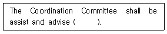
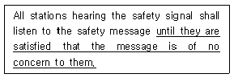
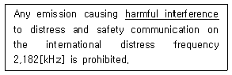
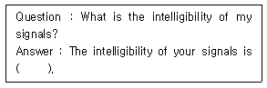
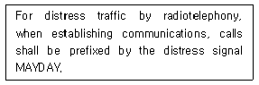
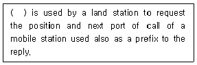
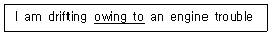
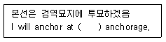
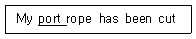

전파전자통신기능사 (2016-06-11 기출문제)
1과목: 임의 구분
1. AM 변조에서 반송파의 진폭이 100[V] 이고, 신호파의 진폭이 75[V]일 때 변조도는 몇 [%]인가?
- 0.14
- 0.25
- 0.43
- 0.75
(정답률: 91%)

2. 89.1 [MHz] 의 반송파를 최대주파수편이 100[KHz], 신호파 10[KHz]로 FM 변조했을 경우 변조지수 (mf) 는?
- 0.1
- 0.89
- 8.9
- 10
(정답률: 74%)
3. 슈퍼헤테로다인 수신기에서 발생하는 영상주파수는? (단. 수신주파수, 국부발진주파수, 중간주파수를 fr, fo, fi라고 하며, 상측(上側) 헤테로다인 방식의 주파수 변환을 한다.)
- fi + fr
- fi - fr
- fo - fr
- fr + 2fi
(정답률: 82%)
4. 전체 비트수가 32이고, 정보 비트 수가 30비트일 때 코드 효율은 약 얼마인가?
- 약 0.03
- 약 0.94
- 약 1.06
- 약 15.5
(정답률: 83%)
5. 어떤 전송시스템에서 코드효율이 1이고, 전송효율이 0.8일 때 전체효율은?
- 1.8
- 1
- 0.8
- 0.2
(정답률: 91%)
6. 30[MHz] 주파수의 파장은?
- 1[m]
- 5[m]
- 10[m]
- 100[m]
(정답률: 72%)
7. 다음 중 전리층 전파에서 발생하는 페이딩(fading)의 방지대책으로 적합하지 않는 것은?
- 공간 다이버시티를 이용한다.
- 페이딩 방지용 안테나를 사용한다.
- 수신기 내에 AVC 혹은 AGC를 사용한다.
- 송신 주파수를 높인다.
(정답률: 65%)
8. 최적운용주파수(FOT)가 17[MHz]일 때, 최고사용주파수(MUF)는 몇 [MHz]인가?
- 8.5[MHz]
- 10[MHz]
- 17[MHz]
- 20[MHz]
(정답률: 88%)
9. 급전선의 특성 임피던스가 50[Ω]이고, 안테나 임피던스가 75[Ω]인 경우 급전선에 안테나를 연결하였을 때 반사계수는 얼마인가?
- 0.1
- 0.2
- 0.3
- 0.4
(정답률: 77%)
10. 선로의 특성 임피던스가 5[Ω], 부하 임피던스가 10[Ω]인 선로에 정재파비는 얼마인가?
- 0.5
- 1
- 1.5
- 2
(정답률: 64%)
11. 다음 중 원래 등록한 이동통신 교환국 서비스 지역을 벗어나, 다른 이동통신 교환국 서비스 지역에 들어가서도 계속해서 이동전화를 걸거나 받을 수 있는 서비스는?
- 로밍(roamimg)
- 다중접속
- 페이딩
- TRS
(정답률: 94%)
12. 다음 중 위성통신의 장점에 대한 설명으로 적합하지 않은것은?)
- 동보통신이 가능하다.
- 전송지연이 발생하지 않는다.
- 광대역 통신이 가능하다.
- 넓은 범위의 지역에서 통신이 가능하다.
(정답률: 91%)
13. 다음 중 정지위성의 고도와 가장 가까운 고도는 얼마인가?
- 1,000[km]
- 10,000[km]
- 20,000[km]
- 36,000[km]
(정답률: 92%)
14. 다음 중 위성통신 지구국에 널리 사용되는 안테나는?
- 롬빅 안테나
- 웨이브 안테나
- 카세그레인 안테나
- 야기 안테나
(정답률: 77%)
15. 위성통신은 중계기능에 따라 수동위성과 능동위성으로 나눌 수 있다. 다음 중 능동 위성방식에 속하지 않는 것은?
- 랜덤 위성
- 위상 위성
- 정지 위성
- 반사 위성
(정답률: 71%)
16. 정현파, 여현파 또는 여러 가지 형태의 신호를 만들어 내는 장치를 무엇이라고 하는가?
- 신호발생기
- 변복조기
- 논리회로
- 증폭기
(정답률: 79%)
17. 다음 비교측정의 분류에서 피측정량을 지침의 지시눈금으로 나타내는 방법으로, 신속한 측정이 가능하나 감도는 떨어지고 정밀을 요하지 않는 공업상 실제 측정에 많이 사용되는 것은 무엇인가?
- 편위법
- 영위법
- 치환법
- 보상법
(정답률: 78%)
18. 다음 중 원래의 신호를 재현하는 능력을 나타내는 것으로, 수신기의 종합주파수 특성이나 왜율 등에 따라 크게 좌우되는 항목은?
- 선택도
- 안정도
- 충실도
- 잡음지수
(정답률: 68%)
19. 오실로스코프의 수직축과 수평축 입력에 주파수와 진폭이 같고, 위상이 90도 다른 전압을 가하면 스코프에 나타나는 리사주 도형은 어떤 모양인가?
- 사선
- 타원
- 원
- 사각형
(정답률: 78%)
20. 단상 전파 정류회로에서 다이오드 순방향 저항을 0으로 가정하였을 때, 정류 효율은 이론적으로 최대 얼마인가?
- 40.6 [%]
- 81.2 [%]
- 100 [%]
- 112 [%]
(정답률: 78%)
2과목: 임의 구분
21. 다음 중 ITU의 법률문서에 해당하지 않는 것은?
- Administrative Regulations
- Constitution of the International Telecommunication Union
- Convention of the International Telecommunication Union
- International Convention for the SAFETY OF LIFE AT SEA SOLAS
(정답률: 73%)
22. 다음 문장 중 괄호 안에 들어갈 단어로 적합한 것은?

- the Administration
- the council
- the Staff
- the Secretary-General
(정답률: 77%)
23. What is the supreme organ of the ITU?
- The Council
- The General Secretariat
- the Plenipotentiary Conference
- the World Radiocommunication Conference
(정답률: 80%)
24. 다음 중 무선통신 관련 용어와 해석이 옳지 못한 것은?
- Frequency tolerance – 주파수 허용편차
- Spurious emission – 대역외 발사
- Survival craft station – 구명 이동국
- Alarm signal – 경보 신호
(정답률: 69%)
25. What signals shall we send in urgency by radiotelephony?
- SECURITE, spoken three times
- PAN PAN, spoken three times
- MAYDAY, spoken three times
- HELP, spoken three times
(정답률: 72%)
26. 다음 문장의 밑줄 친 부분을 가장 옳게 번역한 것은?

- 안전통보가 그 국에 염려 없는 것을 느낄 때까지
- 안전통보가 그 국에 관계없다는 것을 확인할 때까지
- 안전통보가 그 국에 중요하다고 인정될 때까지
- 안전통보가 그 국에 만족할 정도로 관계 있을 때까지
(정답률: 66%)
27. 다음 중 밑줄 친 부분에 대한 가장 적합한 해석은?

- 양호한 신호
- 유익한 통신
- 유해한 혼신
- 해로운 사고
(정답률: 90%)
28. What is the safety signal used in radiotelephony?
- MAYDAY
- PAN PAN
- SECURITE
- OVER
(정답률: 72%)
29. 해상이동 업무용 약어 “SLT”의 의미를 바르게 나타낸 것은?
- International Information
- Notice to mariners
- Prefix office of destination
- Radio Maritime Letter
(정답률: 65%)
30. “그곳은 이곳에 전송할 것이 있습니까?”라는 내용의 Q 부호는?
- QRU
- QSU
- QSA
- QUM
(정답률: 61%)
31. 다음 중 figure(숫자) 또는 Mark(기호) code가 적절하게 표현되지 않은 것은?
- 1 – UNA ONE
- 4 – KARTE FOUR
- 8 - OKEITEEN
- 마침점 – STOP
(정답률: 89%)
32. 무선전화 절차용어 중 “STOP" 은 어떤 숫자 또는 기호를 전송하기 위한 것인가?
- 숫자 2
- 숫자 6
- 숫자 9
- 종지부
(정답률: 90%)
33. 다음 문장의 회신에게 괄호 안에 들어갈 단어로 적합하지 않은 것은?

- fair
- commercial
- poor
- good
(정답률: 64%)
34. 다음 문장을 올바르게 해석한 것은?

- 무선전화에 의한 조난통보는 MAYDAY로 고정되어야 한다.
- 무선전화에 의한 조난통보는 MAYDAY에 의해서 시작되어야 한다.
- 무선전화에 의한 조난전송을 위하여 호출은 조난신호 MAYDAY로 설정되어야 한다.
- 무선전화에 의한 조난통신을 위하여 통신을 설정할 때는, 호출은 조난신호 MAYDAY에 의하여 전치(前置)되어야 한다.
(정답률: 78%)
35. Fill in the blank with the proper abbreviation to be used for radiocommunications in the maritime mobile service.

- CQ
- WX
- TL(Traffic List)
- TR(Traffic Report)
(정답률: 65%)
36. 다음 중 AMVER(Automated Mutual-assistance Vessel Rescue) 통신에 대한 설명으로 적합하지 않는 것은?
- 수색과 구조(Search and Rescue)업무를 행한다.
- 미국 해안경비대(U.S.C.G)에 의해 무료로 운용된다.
- 해상에 있어서 사고예방, 조난 시에 위치 추적을 한다.
- 항해하는 선박의 안전운항과 경제적 운항을 위하여 항로를 추천하는 제도이다.
(정답률: 69%)
37. 다음 중 IMO 표준해사통신영어에 대한 의미가 잘못 표기된 것은?
- 위치 : Status
- 침로 : Courses
- 방위 : Bearings
- 거리 : Distance
(정답률: 75%)
38. 다음 문장에 대한 번역으로 적절한 것은?

- 본선은 기관고장으로 예인 중이다.
- 본선은 기관 고장으로 수리 중이다.
- 본선은 기관 고장으로 표류 중이다.
- 본선은 기관 고장으로 대기상태다.
(정답률: 72%)
39. 다음의 문장을 표준 해사영어로 번역하였을 때 괄호 안에 들어갈 가장 적당한 단어는?

- waiting
- pilot
- custom
- quarantine
(정답률: 77%)
40. 다음 문장에 대한 번역으로 옳은 것은?

- 본선의 우현 로프는 절단되었다.
- 본선의 좌현 로프는 절단되었다.
- 선수의 예인 로프는 절단되었다.
- 선미의 예인 로프는 절단되었다.
(정답률: 76%)
3과목: 임의 구분
41. 다음 중 전파법의 목적으로 볼 수 없는 것은?
- 전파의 효율적인 이용
- 전파에 관한 기술개발의 촉진
- 전파 관련 분야의 진흥
- 개인의 복리증진
(정답률: 90%)
42. 특정한 주파수의 용도를 정하는 것을 무엇이라고 하는가?
- 주파수 분배
- 주파수 할당
- 주파수 지정
- 주파수 사용승인
(정답률: 68%)
43. 전파이용의 촉진과 전파와 관련된 새로운 기술의 개발과 전파방송기기 산업의 발전 등을 위하여 전파진흥기본계획을 몇 년마다 세워야 하는가?
- 2년
- 3년
- 4년
- 5년
(정답률: 83%)
44. 대가에 의한 주파수할당을 받은 자의 주파수의 이용기간은 몇 년의 범위 내에서 이용할 수 있는가?
- 5년
- 10년
- 15년
- 20년
(정답률: 69%)
45. 심사에 의한 주파수할당을 받은 자의 주파수의 이용기간은 몇 년의 범위 내에서 이용할 수 있는가?
- 5년
- 10년
- 15년
- 20년
(정답률: 60%)
46. 다음 중 심사에 의해 주파수를 할당하고자 하는 경우 심사하는 사항이 아닌 것은?
- 전파자원 이용의 효율성
- 신청자의 재정적 능력
- 신청자의 기술적 능력
- 신청자의 전파발전을 위한 경력
(정답률: 79%)
47. 다음 중 준공검사를 받지 아니하고 운용할 수 있는 무선국은?
- 25W 무선설비를 시설하는 어선의 선박국
- 적합성평가를 받지 않은 무선기기를 사용하는 아마추어국
- 30W 무선설비를 시설하는 방송국
- 50W 무선설비를 시설하는 화물선의 선박국
(정답률: 79%)
48. 선박국과 해안국 간, 선박국 상호간 또는 선상통신국 상호 간의 무선통신업무를 무엇이라 하는가?
- 이동업무
- 해상이동업무
- 육상이동업무
- 해상무선항행업무
(정답률: 70%)
49. 전원회로에 퓨즈 또는 자동차단기를 갖추어야 하는 무선설비의 공중선 전력의 범위는 얼마인가?
- 공중선 전력 3 와트를 초과하는 무선설비
- 공중선 전력 5 와트를 초과하는 무선설비
- 공중선 전력 8 와트를 초과하는 무선설비
- 공중선 전력 10 와트를 초과하는 무선설비
(정답률: 75%)
50. 무선설비의 운용을 위한 전원의 전압변동률은 정격전압의 얼마 이내로 유지할 수 있어야 하는가?
- ±5[%]
- ±10[%]
- ±15[%]
- ±20[%]
(정답률: 74%)
51. 다음 중 무선설비를 위탁운용하거나 공동 사용하는 경우 만족해야 하는 조건으로 틀린 것은?
- 성능이 우수한 무선설비를 사용할 것
- 전파가 능률적으로 발사될 수 있는 곳에 설치할 것
- 이미 시설된 무선국의 운용에 지장을 주지 아니할 것
- 무선설비로부터 발사되는 전파가 인근 주택가의 방송수신에 장애를 주지 아니할 것
(정답률: 73%)
52. 전파전자통신기능사의 종사범위 중 육상에 개설하는 무선국의 무선설비로 국내통신을 위한 통신운용의 범위로서 맞는 것은?
- 해안국과 항공국 외의 무선국의 공중선 전력 150와트 이하의 무선전신 및 팩시밀리
- 어업용 해안국 외의 해안국의 공중선 전력 100와트이하의 팩시밀리
- 항공국과 방송국 외의 무선국의 공중선 전력 120 와트 이하의 무선전화
- 항무용 해안국의 공중선 전력 150와트 이하의 팩시밀리
(정답률: 68%)
53. 국제전기통신연합의 헌장 및 협약 중 전파통신에 관한 특별 규정이 아닌 것은?
- 무선주파수 스펙트럼 및 정지위성 궤도의 이용
- 유해한 혼신
- 전기통신의 비밀
- 국방기관의 설비
(정답률: 44%)
54. 다음 중 디지털선택호출장치(DSC)의 조난 및 안전 주파수로 맞지 않는 것은?
- 2,187.5 [kHz]
- 8,414.5 [kHz]
- 156.525 [MHz]
- 22.375 [MHz]
(정답률: 57%)
55. 육상 VHF해안국의 통신범위(20~30해리)내에 속하는 해역은?
- A1 해역
- A2 해역
- A3 해역
- A4 해역
(정답률: 86%)
56. SOLAS협약상 GMDSS 규정의 적용대상 선박은?
- 국내항해에 취항하는 5,000톤의 여객선
- 국제항해에 취항하는 총톤수 500톤 어선
- 국제항해에 취항하는 총톤수 10,000톤 어선
- 국제항해에 취항하는 총톤수 300톤 어선
(정답률: 76%)
57. 암호표를 가지고 암호의 내용을 알아내는 것을 무엇이라고 하는가?
- 암호분석
- 암호해독
- 암호연구
- 암호습득
(정답률: 91%)
58. 다음 중 통신 제원에 속하지 않는 것은?
- 호출부호
- 주파수
- 업무일지
- 교신시간
(정답률: 84%)
59. 다음 중 통신 수단별 보안도가 가장 낮은 것은?
- 시호통신
- 전령통신(인편)
- 전기통신
- 음향통신
(정답률: 57%)
60. 통신보안 위규사항 중 국가 행정비밀의 누설에 관한 사항으로 볼 수 없는 것은?
- 대공관계 특별호구조사, 신원조사 등
- 비밀로 분류된 대공관계 신고, 보고제도
- 재외 공관에 발하는 훈령
- 기타 국가 시책에 영향을 초래하는 사항
(정답률: 71%)